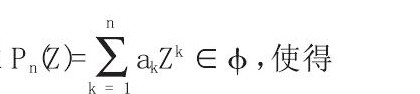
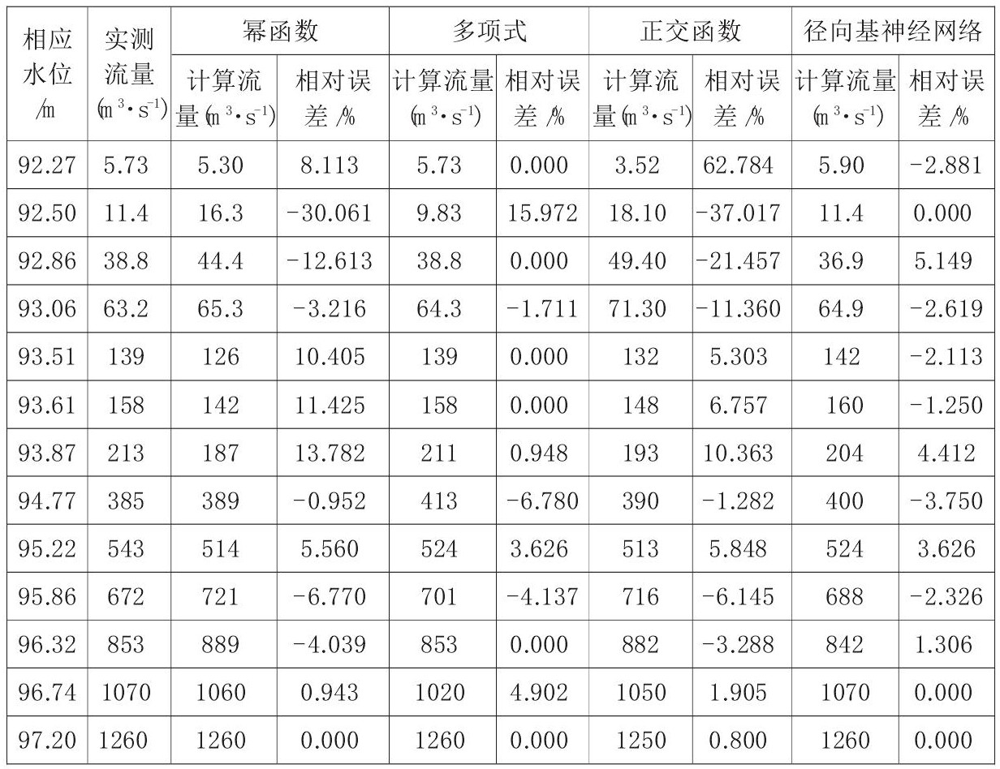

山区河流水位流量关系模型优选
伍勇 余卫国 李红
湖北省荆州市水文水资源勘测局
山区河流水势变化大, 水流特性受到多方面因素的影响。为此, 确定山区河流水位、流量关系, 研究整个水流特性变化具有重要意义。本文根据沙溪坪水文站 (山区型) 提供的水位、流量数据, 选择幂函数、多项式、正交函数、径向基神经网络等四种模型进行分析对比, 并绘制水位流量关系曲线。结果表明, 选择的四种模型都能通过符号检验、适线检验、偏离数值检验, 而径向基神经网络和多项式能过定线精度指标, 且径向基神经网络模型精度更高, 具有较强的非线性映射能力, 是确定水位流量关系的一种高效的方法。
山区型河流大多呈现季节性水流特性, 在旱季, 河槽中水流较细甚至干涸无水, 在雨季一旦降水量大, 汇集于河槽形成洪水, 洪水涨落变幅大, 涨率和退率都快。河槽形成水流, 需测验水位和流量, 而在大洪水过程中, 由于水流集中、流速变大、河槽变宽等因素, 给测验人员带来很多不便。为高效收集水文测验资料, 减少人为误差, 保证水位流量关系模型在规定允许误差范围内, 是提高水文资料精度和可靠性的有效手段。
1 背景
沙溪坪水文站位于湖北省松滋市刘家场镇西南地区平原和山地结合处, 东经111°24′, 北纬29°55′, 为下游水库入库控制站, 控制流域面积970km, 为二类巡测站。由于受到上游水电站控制, 具有洪水规律与降水规律相似性。非汛期时段, 河槽干枯或水电站发电出水, 水量很小;汛期雨量集中, 断面上游水流汇集于河槽内, 漫过水电站挡水坝, 水位陡涨、流量变大。但随着降水强度减弱, 水位也随之落下, 流量变小, 容易出现陡涨陡落现象。应做好沙溪坪水文站水位流量模型建设, 减少汛期测验误差, 有效预测下游水库来水量。
2 水位流量模型及应用
沙溪坪水文站水位流量关系相对稳定, 选取2013年实测水位流量单一曲线法定线推流数据。
2.1 幂函数模型
由《水文资料整编规范》提供的Q=CZe数学模型, 不能满足断流水位的约束条件, 因此, 在公式上加一个常数水位C, 则所选幂函数为:
式中, Z———水位, m;
Q———流量, m/s;
a、b、c———待定参数。
幂函数按照y=ax+c建立方程,
采用Excel电子表格软件中的规划求解功能, 给a, b, c定个初始值, 将水位差值平方和最小值作为目标函数。调整收敛度和迭代次数, 保证计算精度。本次a, b, c初始值为0.2, 0.2, 92.27。
2.2 多项式
给定一个n次多项式Q=a0+a1Z+a2Z+…+anZ拟合m个数据点 (Zi, Qi) (i=1, 2, 3…, m) , Φ为所有次数不超过n (n≤m) 的多项式构成的函数, 现求
满足I的Pn (Z) 为最小二乘拟合多项式。
通过矩阵表示a1, a2, a3, a4…an的线性方程组, 求出ak (k=1, 2, 3…n) , 从而可得多项式:
Pn (Z) 为所确定拟合多项式。利用Matlab Cure Fitting toolbox进行拟合, R值0.999。
2.3 正交函数
正交函数是一种分析矩阵数据中的结构特征, 提取主要数据特征量的一种方法。它是由对数函数演变而来, 再利用最小二乘法进行拟合。
根据给定的节点 (xi, yi) (i=0, 1, …, m) 基权函数w (xi) >0, 构造出带权正交多项式族{Pk (x) }k=0 (n+1<m) , 用递推公式表示如公式 (5) :
其中:
根据公式 (5) 计算系数:
由 (5) 、 (6) 得到正交函数拟合水位流量关系模型y=a0+a1P1+a2P2+…+anPn, 利用Visual Basic语言编制程序, 得到n=2, 确定二阶次模型。
2.4 径向基神经网络
径向基 (RBF, Radial Basis Function) 神经网络为一种性能良好的前馈型人工神经网络。它是基于人脑的神经元细胞对外界反应的局部性而提出的, 是一种新颖有效的前馈式神经网络, 具有较高的运算速度。特别是它的较强的非线性映射能力, 能以任意精度全局逼近一个非线性函数, 使其在很多领域得到了广泛应用。
径向基神经网络通常具有三层的网络结构, 包括输入层、隐层、输出层, 水位流量关系网络模型的拓扑结构, 如图1所示。在径向基网络中, 隐层节点通过基函数执行一种非线性变化, 将输入空间映射到一个新的空间, 输出层节点则在该新的空间实现线性加权组合。RBF网络中最常用的基函数是高斯函数, 对任意的输入向量X∈R (R为输入样本集) , 它定义为:
表1 水位流量统计表 下载原表
图1 径向基水位流量结构图 下载原图
式中, Ri (x) ———隐层第i个单元的输出;X为N维输入矢量, X={XP|XP∈R, p=1, 2, …, K};
Ci———隐层第i个单元高斯函数的中心点;
σi———第i个隐节点的归一化参数, 即该隐节点的宽度;
N———隐层的节点数;
P———样本数。
利用径向基函数构建一个径向基神经网络, 网络自动根据输入向量和期望值进行调整, 进行函数逼近, 预先设定参数。径向基函数网络不需要训练, 在创建的时候自动训练好, 以下是关键代码:
图2 水位~流量关系图 下载原图
>>eg=7;%设置平方和误差
>>sc=7;%设置展开常量
>>net=newrb (p, t, eg, sc) ;%网络测试
径向基神经网络自动增加网络隐层神经元数, 直到平和和误差满足精度为止。
3 模型数据分析
对于2013年沙溪坪水文测验资料, 通过幂函数、多项式、正交函数、径向基神经网络等四种模型的应用, 每个模型解算各自的相关参数, 并求解相应流量, 把实测流量与计算流量数据代入相对误差公式, 得出实测流量与计算流量相对误差统计表, 如表1。
根据表1数据, 绘制出实测散点及不同模型的曲线, 见图2。
表1数据显示, 最大相对误差分别是:幂函数-30.061%、多项式15.972%、正交函数62.784%、径向基神经网络5.149%;最小相对误差径向基神经网络比其他模型小;而相对误差偏大主要集中在低水位流量上。整体上低水、中水、高水相对误差, 径向基神经网络比其它模型偏小。
通过表1, 不同模型的实测数据与计算数据的符号检验、适线检验、偏离检验都符合要求。定线指标只有多项式和径向基神经网络通过《水文资料整编规范》技术要求。径向基神经网络定线指标系统误差为-0.06%, 标准差为3.01%;多项式定线指标系统误差0.98%, 标准差5.71%。径向基神经网络定线精度高于多项式, 更是高于人工定线指标。径向基神经网络处理实测数据相对误差偏小, 精度符合设置要求, 优于其它函数模型, 具有一定的可行性。
4 结论
确定水位流量关系一般利用最小二乘原理, 通过转化为求线性方程组解, 使解算数据与实际数据之间的误差达到最小。水位流量关系并不固定, 受糙率、比降、过水断面冲於等多方面因素影响。根据实际情况, 利用径向基神经网络新型方法求解水位流量关系模型, 不仅快捷、精度高, 且便于下游做好防汛预报工作, 能降低劳动强度, 提高整体效率。
多数水位流量关系模型都是从整体考虑计算数据, 没有考虑部分低水位流量情况, 确定低水位流量数据相对误差偏大。而径向基函数神经网不同于其他模型, 它是事前确定精度, 然后计算每个数据与实测数据之间的误差是否满足于制定精度, 从而选择最优数据, 能避免相关因素影响检验结果。